사진을 저장하는데 널리 사용되는 JPG 이미지 포맷은 8x8 픽셀로 화면을 쪼개 저장하는 방식을 사용하는데, 이 방식은 용량을 줄이기 위해 낮은 품질을 선택해 저장할 때 8x8 단위로 화면이 나뉘어 보이는 단점을 가진다.
- 참고: How JPG Works
")
사진을 웹 페이지에서 배경 이미지로 사용하는 경우 데스크탑 웹 브라우저부터 모바일 브라우저까지 모두 지원하기 위해 해상도도 높고 용량도 상대적으로 큰 이미지를 사용하는 경우가 많다. 빠른 네트워크만을 가정한다면 큰 문제가 되지 않지만, 웹 페이지가 어떤 환경에서 표시될 지 모르기 때문에 항상 가볍게 유지하는 편이 좋다고 생각한다.
옛날 옛적엔,
용량을 줄이기 위해 이미지의 품질을 극단적으로 낮추면, 압축 알고리즘 특성이 그대로 드러나 좋지 않다. 이를 극복하기 위해 오래 전부터 이미지 위에 다른 이미지를 덧씌워 나쁜 화질을 숨기는 방법을 써왔다. 배경으로 이미지를 사용하는 경우에는 그 위에 쓰여질 글씨를 돋보이게 하기 위해 이미지를 어둡게 처리하는 경우가 많은데, 플래시 애니메이션에서는 배경을 어둡게 만드는 대신 인터레이스드 영상에서 보이는 주사선 패턴을 덧씌우기도 했다. 이를 통해 낮은 해상도의 영상이나 이미지의 약점을 숨겼다. 아래 이미지를 통해 처리 과정을 살펴보자.
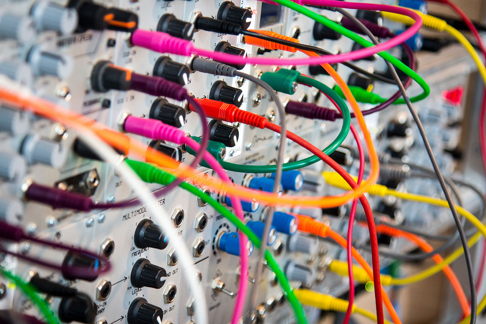
위 이미지의 일부를 잘라 각각 포토샵에서 JPG로 다시 저장할 때 품질을 1과 60으로 다르게 저장한다. 품질이 1인 경우 역시 JPG의 단점인 8x8 픽셀 단위로 화면이 갈라지는 것을 볼 수 있다.
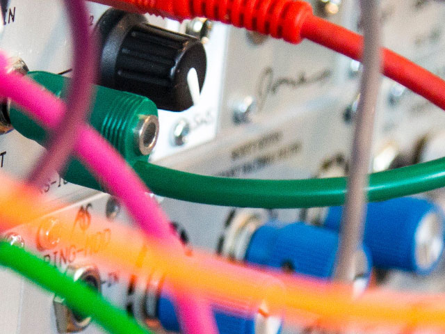 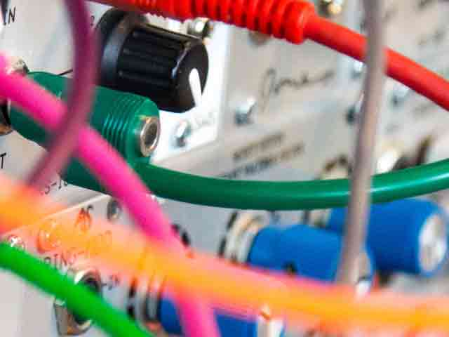
이제 배경으로 사용하기 위해 어둡게 처리해본다. 아래 이미지들은 JPG 이미지 자체를 어둡게 하여 다시 저장하는 것이 아니라, 최종적으로 표시될 장치에서 어둡게 처리하는 것을 묘사하기 위해 PNG로 저장하였다.
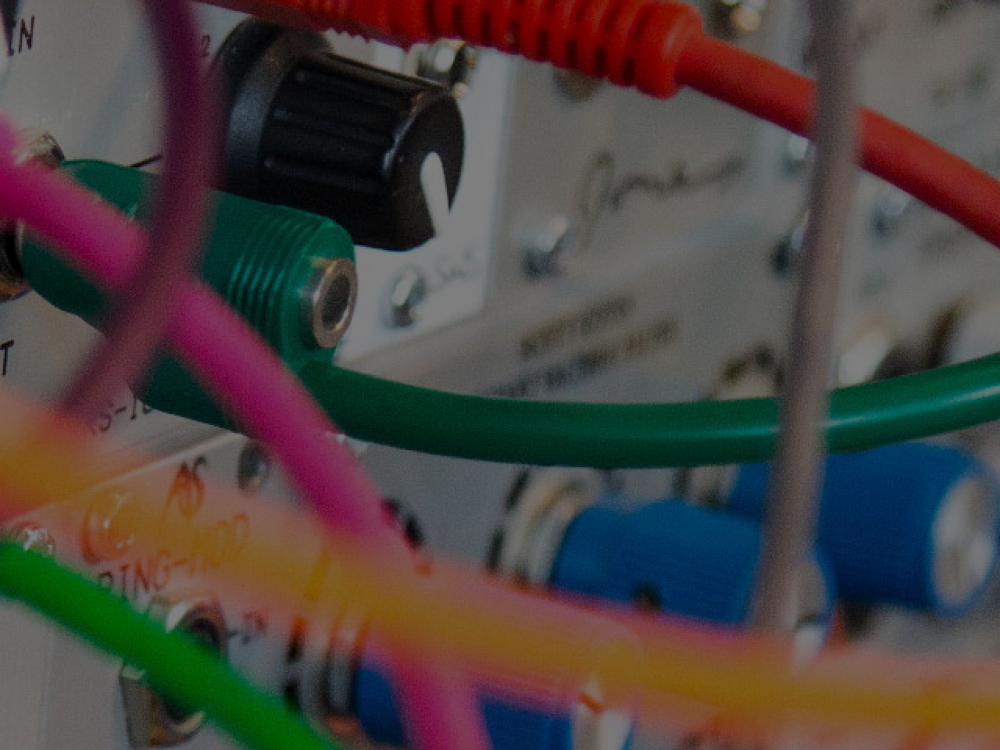 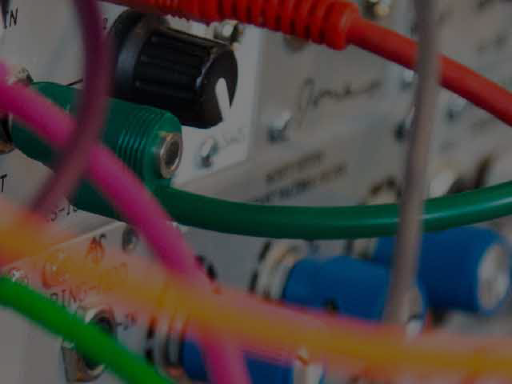
품질 1 이미지에 주사선 패턴을 덧씌우면 아래와 같다.
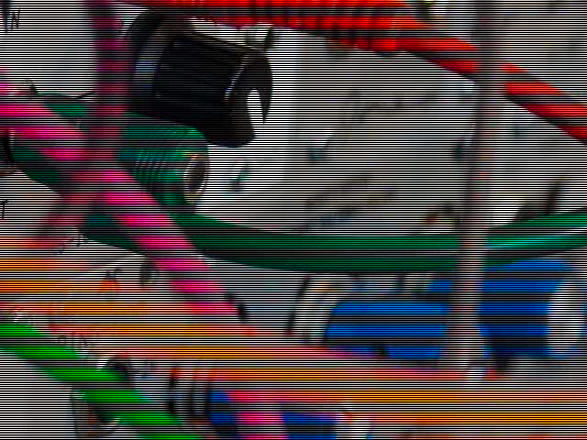
품질 1을 그냥 어둡게 처리한 것과, 주사선 패턴을 씌운 것 중 어떤 쪽을 선호하는 지는 사람마다 다를 수 있다. 위 이미지들을 확대해서 보면 아래와 같다.
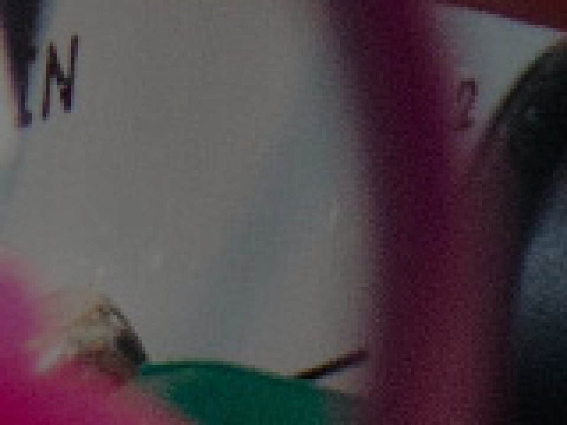 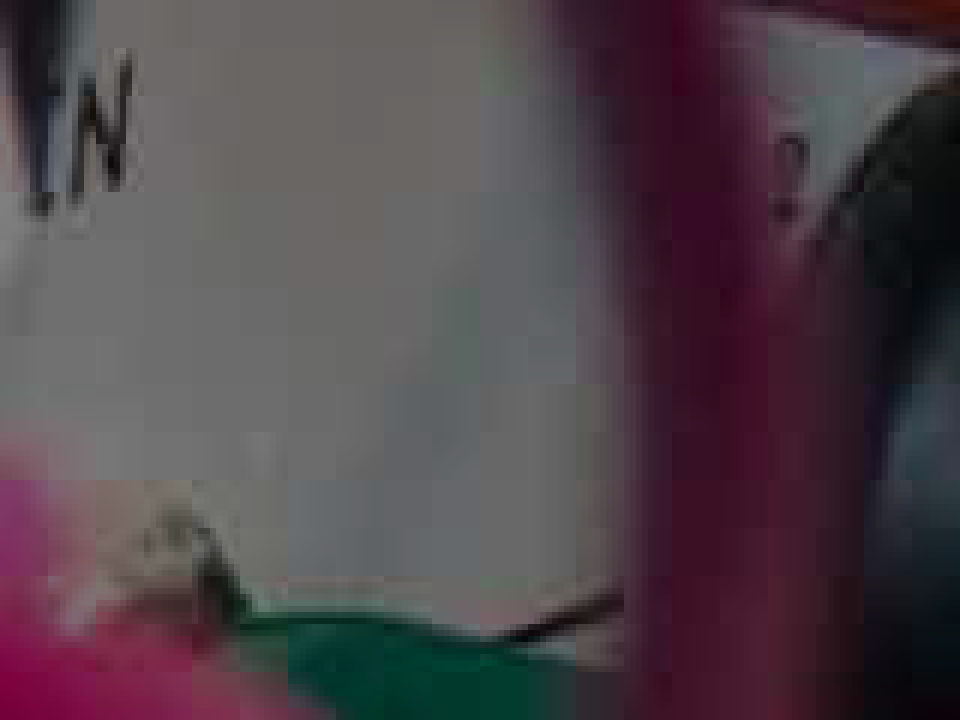 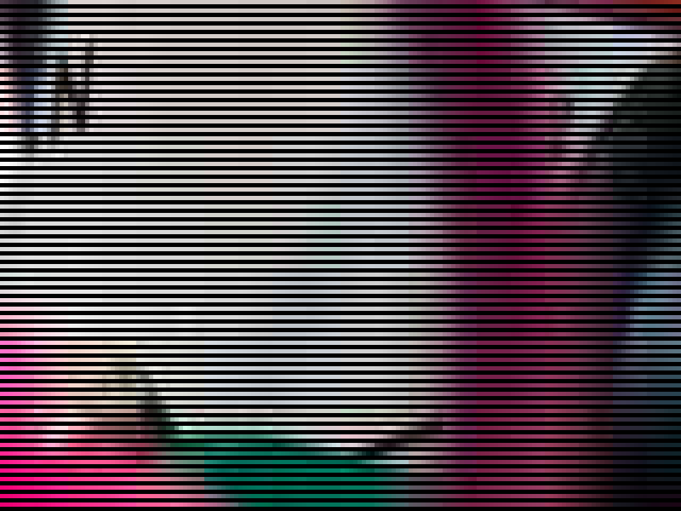
CSS로 구현하기
Duy Pham이 촬영한 이 멋진 원본 이미지는 해상도가 5884 x 3310 픽셀에, 용량은 3.4MiB로 그대로 사용하기에는 지나치게 크다.
배경 이미지로 사용하기 위해 품질을 최대한 낮춰 저장하면 아래와 같다.
작게 표시되면 크게 거슬리지 않지만, 큰 화면에서도 표시될 것을 가정하고 확대해보면 그대로 쓰기에는 적당한 품질이 아닌 것을 확인할 수 있다.
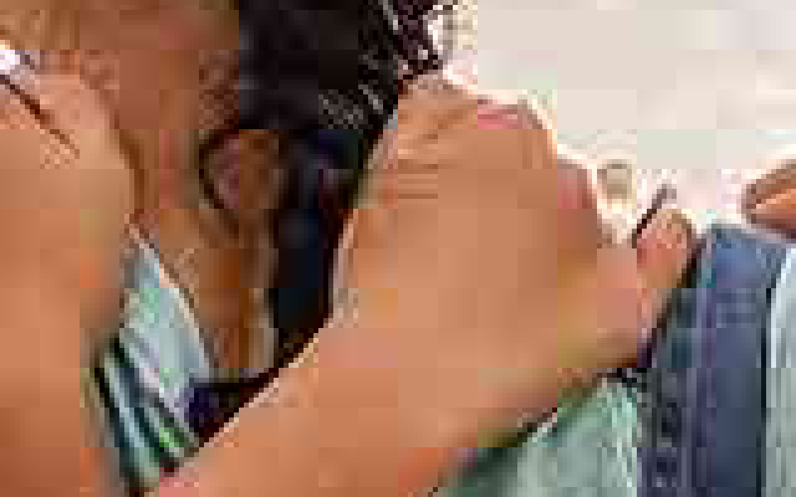
이 단점을 극복하기 위해 위에서 언급했던 주사선 덧씌우기를 CSS로 구현하면 아래와 같다.
.hero-image {
background:
linear-gradient(black 1px, transparent 0),
url("/static/images/small-size-crappy-image.jpg");
background-size: 2px 1px, cover;
background-position: center;
}
주사선 패턴 외에도 등간격으로 점(Polka dot)을 찍는 방식도 활용되었다.
.hero-image {
background:
radial-gradient(black 35%, transparent 1%),
radial-gradient(black 35%, transparent 1%),
url("/static/images/small-size-crappy-image.jpg");
background-position: 0 0, 2px 2px, center;
background-size: 4px 4px, 4px 4px, cover;
}
하지만, 디스플레이 장치가 점점 고해상도로 바뀌어가며 CSS 지원이 확대되는 요즘에는 이와 같은 방법은 널리 쓰이지 않는 듯 하다. 이에, SVG에서 지원하는 feTurbulence 필터를 통해 생성한 불규칙한 노이즈 이미지를 덧씌워 저화질 이미지의 단점을 개선해보려고 한다.
<svg xmlns='http://www.w3.org/2000/svg'
xmlns:xlink='http://www.w3.org/1999/xlink'
width='300' height='300'>
<filter id='noise' x='0' y='0'>
<feTurbulence type='fractalNoise'
baseFrequency='0.95'
stitchTiles='stitch'/>
</filter>
<rect width='300' height='300' fill='#000' opacity='0.18'/>
<rect width='300' height='300' filter="url(#noise)" opacity='0.32'/>
</svg>
위의 SVG 이미지를 아래의 CSS로 덧씌운 결과는 비교적 만족할 만하다. 부분 확대 이미지는 웹 브라우저 화면 캡춰본를 확대한 것이다. 위의 JPG 이미지의 부분 확대 결과물과 1:1로 비교하기는 어렵지만, 블럭 단위로 쪼개져 보이는 현상이 덜한 것은 확인할 수 있다.
.hero-image {
background:
url("/static/images/noise.svg"),
url("/static/images/small-size-crappy-image.jpg");
background-size: auto, cover;
background-position: center;
}
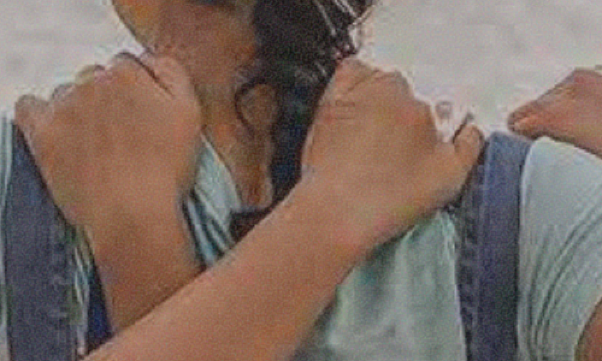
SVG 이미지를 별도로 구성하는 것이 싫다면, base64로 인코딩해서 CSS에 내장할 수도 있다.
.hero-image {
background:
url(),
url("/static/images/small-size-crappy-image.jpg");
background-size: auto, cover;
background-position: center;
}
참고 링크
- SVG 노이즈 이미지를 활용한 웹 페이지: https://sprintseoul.org/
- https://stackoverflow.com/a/49108254/366908